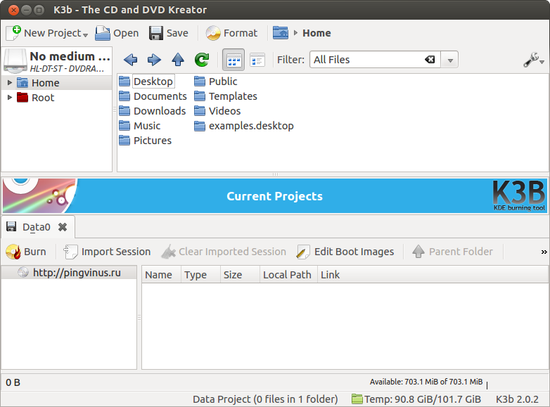

K3b
Для записи дисков
₽Установка Windows, Частный Мастер!Опыт более 10 лет! Бесплатные Выезд и Диагностика. Выезжаю во все районы и область.Узнать большеpkmasterr.ru
зарегистрируйтесь, чтобы ставить оценки
зарегистрируйтесь, чтобы получить доступ к этим функциям

K3b — программа для записи дисков. Обладает множеством возможностей и позволяет создавать все необходимые типы дисков. Является одной из лучших программ в своем классе для Linux.
K3b позволяет создавать CD/DVD диски с данными, музыкальные (MP3, CD-text), видео и DVD диски, копии дисков,
Для записи различных типов музыкальных дисков поддерживается несколько очень полезных функций. Например, есть возможность автоматического переименования mp3 и ogg файлов в формат «имя_артиста — название трека.mp3» (используются ID3 теги). Есть возможность автоматического декодирования аудио-файлов, запись аудио-файлов на лету, выравнивание уровня громкости, обрезание треков с конца или начала.
Также имеется возможность создания своих образов дисков, чтобы потом их можно было легко записать на физический носитель.
Интерфейс K3b в целом понятен. Главное окно программы разделено на две части. В верхней отображаются ваши локальные файлы, а в нижней части вкладки проектов, в которые вы добавляете свои локальные файлы. Поддерживаются темы оформления. Правда у меня в Ubuntu тема была всего одна, дополнительные необходимо скачивать самостоятельно. Поддерживаются плагины.
Программа K3b входит в состав среды рабочего стола KDE и использует библиотеки Qt. Однако K3b является независимой программой и при наличии соответствующих библиотек может работать в любой среде.
Название K3b является сокращенным от KDE Burn Baby Burn.
Установка в Ubuntu (LinuxMint)
sudo apt install k3b